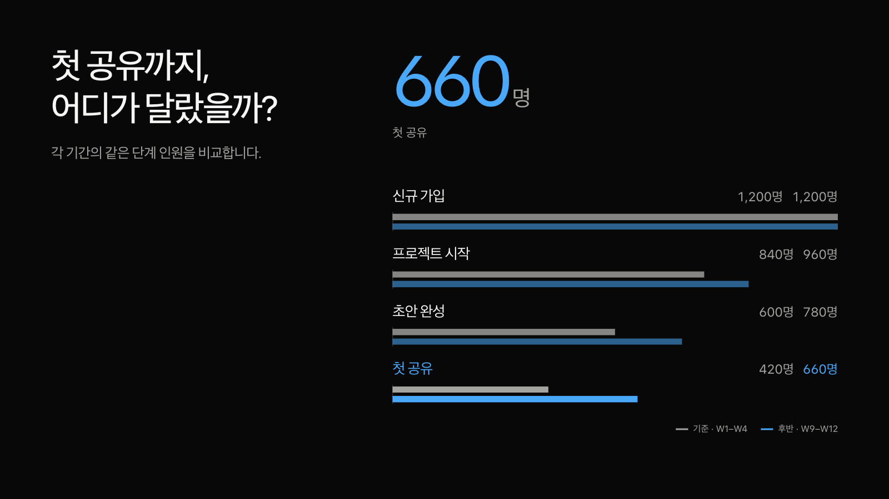

글이 먼저,
근거가 이어지게.
같은 원고를 두 관점에서 만들고, 두 차례 비평하며 다듬었습니다. 문장과 숫자의 읽기 폭을 나누고, 각 장면에 맞게 글과 근거의 거리를 정했습니다.
같은 원고·수치로 비교합니다. 슬라이더 또는 방향키를 사용하세요.


이전 배치 · 기준1b395a5적용 후 · 실제 웹 발표
읽기 폭을 분명하게
주장과 설명을 같은 시작선에 놓고, 문장의 역할에 맞는 폭과 행간을 줬습니다. 직접 정한 중앙정렬과 줄바꿈은 유지합니다.
근거에 맞는 자리
추세는 넓은 차트, 비교는 가까운 수치와 자료, 짧은 흐름은 하나로 이어지는 관계를 중심에 둡니다. 모든 장을 같은 구도에 끼워 넣지 않습니다.
바꿔 써도 이어지게
큰 숫자는 실제 폭을 재어 자리를 확보합니다. 모바일에서는 글·수치·그림·표로 읽습니다. 글 편집과 창 크기 변경 뒤에도 원문과 데이터가 이어집니다.
관찰한 공식 장면: Apple WWDC24·OpenAI DevDay · Anthropic Code w/ Claude. 두 차례 직접 비평와 최종 취합에 채택·수정·기각의 이유를 기록했습니다.
원고를 바꿔 보는8장 스타터 ↗